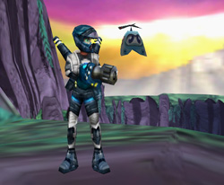
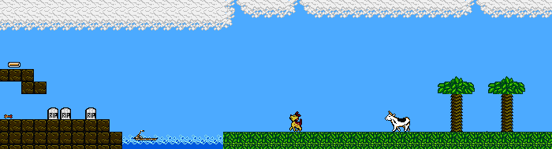

|
| Jet Force Gemini |
Il existe des tonnes de Codes Action Replay pour ce jeu, mais aucun n’est vraiment intéressant. Plutôt que de vous taper des pâtés de codes, je vous propose simplement deux codes, mais du bon. Le premier code vous donne TOUTES les armes dès le début du jeu. Le second vous file des munitions infinies pour TOUTES ces armes… De quoi vous promener dans ce magnifique jeu ! |
|
 |
| Faxanadu |
Un jeu d’aventure-action sorti en 1987 sur la NES, et qui me plait toujours autant quand je décide de le refaire une fois tous les 5 ans. Je vous propose ici de télécharger la carte complète du jeu que j’ai fabriqué en collant bout à bout chaque ecran du Jeu. Cliquez sur la carte mais attention, c’est lourd… Visitez cette Page pour un dossier complet sur Faxanadu ! |
| The Adventures of Rad Gravity |
Un jeu d’aventure-action sorti en 1990 sur la NES. Le ton humoristique aide à finir ce jeu tant il est costaud ! En effet, la maniabilité est pas ce qu’il y a de plus fluide, et pour savoir ce qu’il faut faire sur chaque planète c’est vraiment du n’importe quoi ! Qu’importe, ce jeu a une place spéciale sur ce site car mine de rien il est varié, et l’ambiance me plait. Cliquez sur l'Image ! |

|
Si
ce genre de Geekerie vous plait, n’hésitez pas à
aller voir l’excellent Video Game Atlas ! |